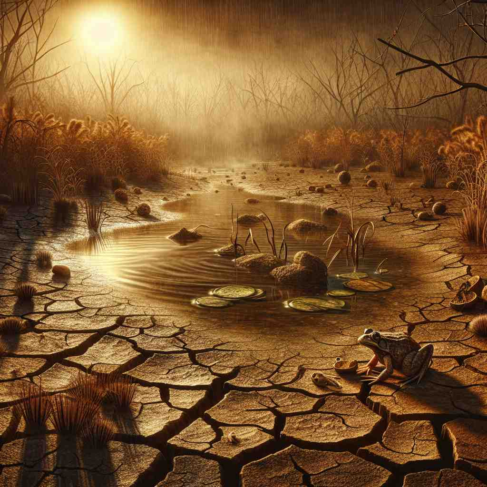

💬 The squirrel may die in nature if it cannot find enough food.

💬 Many plants die from drought in this dry area.
💬 The elderly person wants to die peacefully in their sleep.
💬 In autumn, a leaf dies and falls to the ground.
🔈 [daɪ]
🗝️ v. to stop living
🖼️ 在一个宁静的乡村傍晚，一位年长的农夫坐在草地上，注视着落日，慢慢地闭上了眼睛。他的呼吸渐渐停止，身旁的小狗轻轻地靠在他身边，感知到了一生旅途的终点。
🔍 理解'die'的关键在于把握'生命终止'这一核心概念。无论是实际的死亡，还是事物、机器、情感或愿望的强烈程度，都可以联想到生命终止的过程。这种类比使得'die'在不同语境中的应用变得更加形象和易于理解。
💬 The squirrel may die in nature if it cannot find enough food.
💬 Many plants die from drought in this dry area.
💬 The elderly person wants to die peacefully in their sleep.
💬 In autumn, a leaf dies and falls to the ground.
🌳 这个词来自拉丁语 'dies'（意为 '日子'），在英语中，'die' 作为动词，意为 '死亡'。这个词本身没有明显的前缀或后缀。
💡 可以将' die '想象为生命的终点，它的简短和直接性反映了死亡的突然性和不可避免性。通过联想到 'day' 的终结，使其更容易理解为生命的结束。
🗝️ v. to cease to exist or function
🖼️ 在一个古老的图书馆角落，一台年久失修的打印机停止了工作，无论如何按动按钮，机器都没有反应。管理员叹息着，知道这台打印机可能再也不能使用了。
💬 The tradition has died out in recent years.
❓ 类比生命的终止，表示事物或概念的消失
🗝️ v. to stop working (of machines)
🖼️ 在繁忙的城市里，一辆公共汽车在炎热的下午突然熄火停止运转，司机试图重新启动发动机，但一切徒劳无功。乘客们纷纷走下车，继续他们的旅程。
💬 My phone battery died in the middle of the call.
❓ 将机器的停止运转比作生命的终止
🗝️ v. to lose strength or intensity
🖼️ 在音乐会结束时，最后一个音符在空气中渐渐消散，音乐的强度逐渐消退，观众们沉浸在音乐余韵中，轻声交谈着。
💬 The wind gradually died down in the evening.
❓ 比喻事物强度的减弱如同生命的消逝
🗝️ v. to be overwhelmed by an emotion
🖼️ 在婚礼现场，新娘看到新郎走向她，激动得无法抑制泪水，她感到自己快要被喜悦淹没，她紧紧握住新郎的手，微笑着流泪。
💬 I nearly died of embarrassment when I fell on stage.
❓ 夸张地表达情感强烈到似乎要'死去'
🗝️ v. to be extremely eager
🖼️ 在一个盛大的音乐节上，一位年轻粉丝等候在后台，激动不已地想见到她最喜爱的歌手。她难以抑制自己的狂喜，迫不及待地想要与偶像合影。
💬 She's dying to meet her favorite actor.
❓ 表达强烈愿望如同'不做不能活'